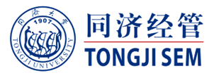
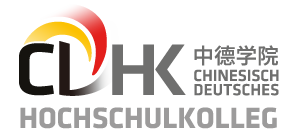

Organizations
Kühne-Stiftung
The public-benefit Kühne-Stiftung (Foundation) was established by the Kühne family in Switzerland in 1976. The Kühne-Stiftung is an operational fund which implements and initiates most of its support projects itself. The deed of foundation specifies the following two main areas of support:
1. Support for training, further education, scholarships and research in the fields of transport and logistics.
2. Support for medical sciences, humanitarian, charitable and cultural projects.
SCHOOL OF ECONOMICS AND MANAGEMENT (SEM), Tongji University

In 1984, the School of Economics and Management was established and became one of the first groups of business schools in China. So far, as one of the top business schools in China, SEM has committed to enhancing its International influence and practical research power.
Internationalization
SEM has established collaborative partnerships with over 70 renowned business schools and universities in 26 countries in terms of scientific research, student exchange and faculty exchange.
Application-oriented research
Both the university and the school have strong research orientation, with proven record of transforming research into knowledge and practice proactively. SEM encourages cross-disciplinary research focusing on three key areas, namely Project Management, Urban Management, and Service Management. SEM and its alumni undertake over half of the large-scale city-development projects in China, such as Disneyland, Hongqiao Transportation Hub, World EXPO Pavilion Construction and ect.
The Sino-German School for Postgraduate Studies (CDHK),Tongji University

CDHK is the most successful academic exchange partnership between the Germany and China.
The CDHK acts as a double bridge: it connects China and Germany as well as academia and industry, theory and practice.
The three logistics chairs at the CDHK not only cover the entire spectrum of logistics and supply chain management, but also approach the field from multiple perspectives.
With the Chair of Global Supply Chain Management focusing on the strategic aspects of logistics and supply chain management, the Kühne-Chair focusing on operational excellence in logistics networks and services, and the Jungheinrich-Chair focusing on technical aspects of logistics, together, they forma comprehensive, but at thesame time specialized, center of regional logistics expertise. Through the extensive and close cooperation with leading German universities and globally active industry partners, cutting edge research and practice oriented teaching constitute the key strengths of this logistics cluster.